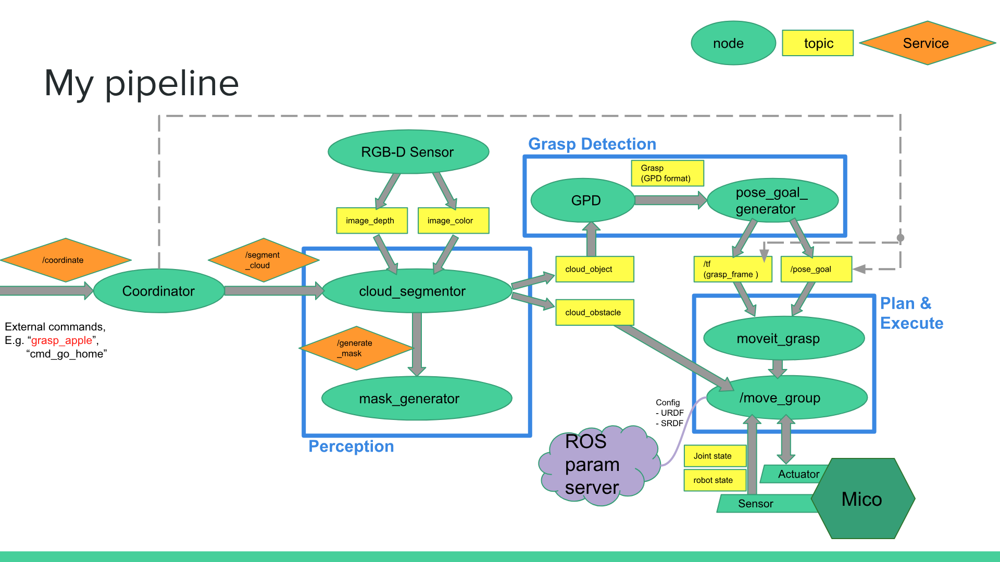

End-to-end Solution for Robotic Manipulation of Unknown Objects
MSR Capstone Project
About the Project
This is my capstone project for MSR program. In this project, I work with Prof. Brenna Argall and her graduate students at Shirley Ryan AbilityLab. The objective of this project is to implement an end-to-end solution for robotic manipulation of unknown objects((novel, unseen in training data, or without geometry model).
The task can be taken apart into three major steps:
1) Recognize and locate an interested object in on tabletop environment under 3D space;
2) Detect proper grasp points for the robot end effector;
3) Plan a path and control the robot to actually pick that interested object.
The ultimate goal of this project is to build a robust pipeline to have a robot arm grasp interested objects with little knowledge of the object or scene beforehand.
Refer to my presentation slides for more details of this project. ROS package is available on my GitHub Repo.
Flow Chart
Above is the whole flow chart for this project’s pipeline of my first choice.
All parts within blue rectangles are highly independent and can be replaced by alternatives, as long as the inputs/outputs are the same or similar.
For instance, the 'Grasp Detection' can be naive version or GPD. The following graph is a result of GPD.
Hardware Involved
- Kinova Mico
- RGB-D Camera (Kinect V2)
- Ubuntu Computer with ROS
Skills Involved
- ROS (Linux)
- Python
- C++
- PCL
- Computer Vision (OpenCV)
- Deep Learning
- ROS MoveIt!